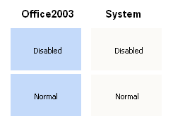
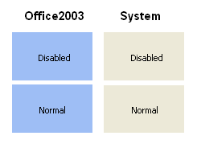

KryptonPanel
Overview
KryptonPanel is a container control that provides a themed background for hosting child controls. Use it for large client-area sections; use KryptonGroup when you also need a border, or KryptonGroupBox for a captioned frame.
Namespace: Krypton.Toolkit
Assembly: Krypton.Toolkit
Inheritance: Object → MarshalByRefObject → Component → Control → ScrollableControl → Panel → KryptonPanel
Key features
- Palette-driven background via
PanelBackStyleandStateCommon/StateNormal/StateDisabled - Optional Krypton-themed scroll bars (
UseKryptonScrollbars) - No border or content rendering (background only)
- Designer child hosting on the panel surface
Class hierarchy
System.Windows.Forms.Panel
└── Krypton.Toolkit.KryptonPanel
Constructors
public KryptonPanel()
public KryptonPanel(PaletteDoubleRedirect stateCommon,
PaletteBack stateDisabled, PaletteBack stateNormal)
The parameterised constructor is for internal/designer use.
Properties
PanelBackStyle
public PaletteBackStyle PanelBackStyle { get; set; }
Default: PaletteBackStyle.PanelClient
Top-level background style. PanelAlternate makes the panel stand out from the client area.
StateCommon / StateDisabled / StateNormal
public PaletteBack StateCommon { get; }
public PaletteBack StateDisabled { get; }
public PaletteBack StateNormal { get; }
Background overrides per state. Only background is customizable (no border or content).
UseKryptonScrollbars
[DefaultValue(false)]
public bool UseKryptonScrollbars { get; set; }
When true, themed scroll bars are used when content overflows.
ScrollbarManager
public KryptonScrollbarManager? ScrollbarManager { get; }
Access to scroll bar manager when UseKryptonScrollbars is enabled.
Methods
SetFixedState
public virtual void SetFixedState(PaletteState state)
Forces a palette state for rendering (advanced).
Visual states
Only Normal and Disabled apply. The panel does not show enabled/disabled chrome by default for all PanelBackStyle values; override StateDisabled when you need a dimmed appearance.
StateCommon provides defaults; StateNormal / StateDisabled override them.
Examples of appearance

Figure 1 — PanelBackStyle = PanelClient

Figure 2 — PanelBackStyle = PanelAlternate
Usage example
kryptonPanel1.PanelBackStyle = PaletteBackStyle.PanelAlternate;
kryptonPanel1.UseKryptonScrollbars = true;
kryptonPanel1.Dock = DockStyle.Fill;
Best practices
- Use
KryptonPanelfor broad layout regions; useKryptonGroupfor bordered groupings. - Set
UseKryptonScrollbarswhen auto-scroll is enabled and scroll bars should match the theme.